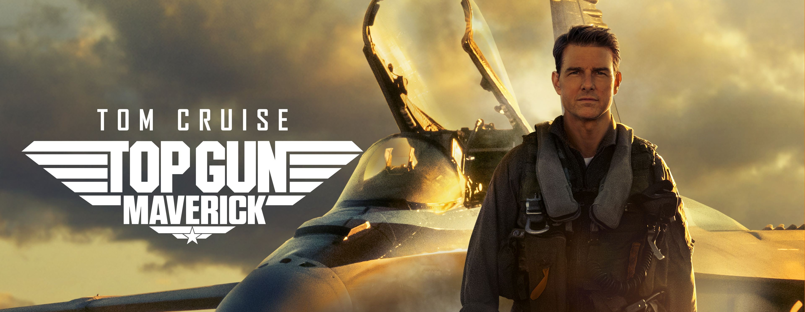
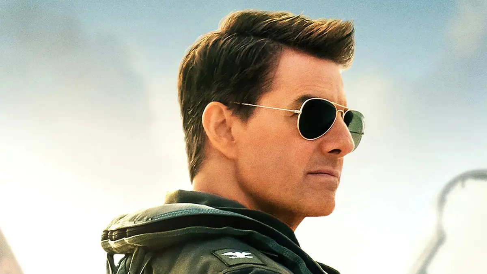
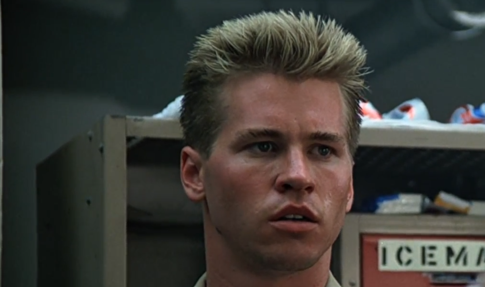

I feel the need... the need for speed.
En 1986, le monde a décollé. "Top Gun" n'est pas simplement un film, c'est une capsule temporelle de l'esthétique et de l'adrénaline des années 80. C'est l'histoire de Pete "Maverick" Mitchell, un pilote de chasse talentueux mais rebelle, qui intègre la prestigieuse école de l'aéronavale américaine. Entre rivalités, romance et combats aériens à couper le souffle, le film a défini une génération et a propulsé Tom Cruise au rang de superstar mondiale.
"Your ego is writing checks your body can't cash."

Vitesse. Rivalité. Gloire.
L'Escadron de Légende
Un casting charismatique qui a marqué les esprits et défini le "cool" des années 80.

Tom Cruise
Pete "Maverick" Mitchell
Le rôle qui a fait de lui une icône. Son sourire ravageur, ses Ray-Ban et son blouson d'aviateur ont défini un style copié dans le monde entier.

Val Kilmer
Tom "Iceman" Kazansky
Le rival parfait. Froid, calculateur et arrogant, il est l'antithèse de Maverick et incarne l'une des plus grandes rivalités du cinéma d'action.
Un Héritage Supersonique
Révolution Aérienne
Grâce à une collaboration sans précédent avec l'US Navy, le film a offert des scènes de combat aérien d'un réalisme et d'une intensité jamais vus auparavant.
Bande-Son Iconique
De "Danger Zone" de Kenny Loggins à l'inoubliable "Take My Breath Away" de Berlin, la bande-son est aussi légendaire que le film lui-même.
Le Classique qui ne vieillit pas
"Top Gun" est l'archétype du blockbuster parfait. Il a tout : un héros charismatique, une romance iconique, des scènes d'action spectaculaires et une bande-son inoubliable. C'est un film qui a capturé l'esprit d'une époque et qui continue, des décennies plus tard, de nous donner des frissons à chaque décollage.